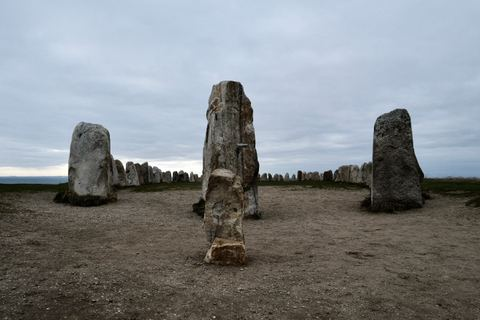
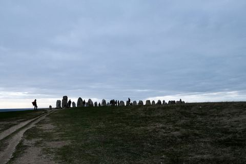
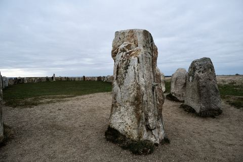
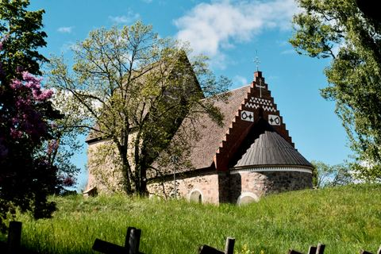
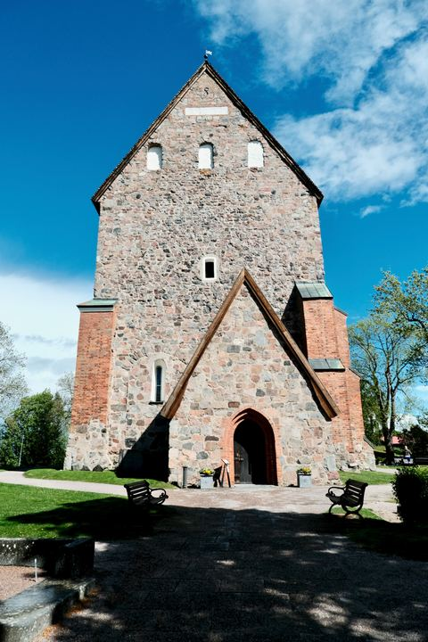
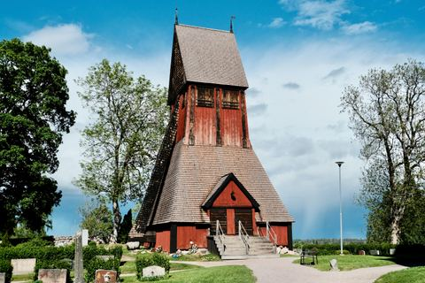

Personal photo blog
Quiet photographs from places, walks, and changing light.
A visual notebook for travel, observation, and the small atmospheres that remain after a journey.

Stories
Featured stories

Ales Stenar
Ales Stenar stands on the southern coast of Sweden, where ancient stones, open fields, sea air, and a vast grey sky create one of Skåne’s most atmospheric landscapes. This story follows a quiet walk around the stone ship, observing its scale, silence, and connection to Nordic memory.




Church of Old Uppsala
In Gamla Uppsala, history gathers around a quiet medieval church, a wooden bell tower, old stone walls, and a runestone set into the church façade. This story follows a walk through one of Sweden’s most historically layered places, where Christian architecture, Viking Age memory, and the open landscape of Old Uppsala meet.



A small edit
Selected photographs

A quiet street scene in Gamla Stan, where cobblestones, historic façades, and Swedish flags create a calm and timeless atmosphere.

A busy summer street in Gamla Stan, where historic façades, restaurant signs, and passing crowds shape the rhythm of Stockholm’s old town.

A stone ship at Anundshög, standing quietly among burial mounds and open fields near Västerås.
At Ales Stenar, standing stones form a quiet ship-shaped monument above the coast, held between open ground and a heavy Nordic sky.
Collected slowly, edited carefully.
This site is designed as a calm archive rather than a feed: fewer images, stronger rhythm, and enough space for each photograph to breathe.